Slik lager du hjemmelagd pasta/ravioli (oppskrift)
Hjemmelagd pasta smaker så mye bedre enn kjøpt tørrpasta, eller kjøpt fersk pasta, for den saks skyld. Og det er mye enklere å lage enn man tror. Du trenger to ingredienser: Egg og mel. That's it. Kanskje også en pastamaskin for å rulle ut pastaen, hadde vært fint. Jeg kjøpte en Jamie Oliver pastamaskin til 400 spenn på jernia. Den er ok. De fleste er ok og nesten identiske.
Og når pastadeigen først er rullet ut, hvorfor ikke lage et fyll til den, som i ravioli?
Her vil du lære 1. Hvordan lage hjemmelagd pasta og 2. Hvordan lage ravioli.
Til en halvkilo pastadeig, trenger du:
225 gram mel
3 store/mellomstore egg.
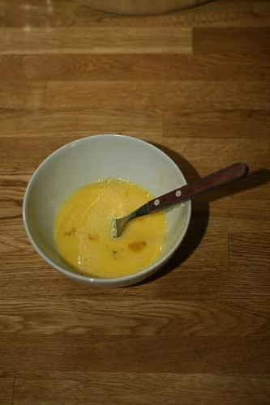
Rør eggene med en gaffel i en liten skål i et par minutter.
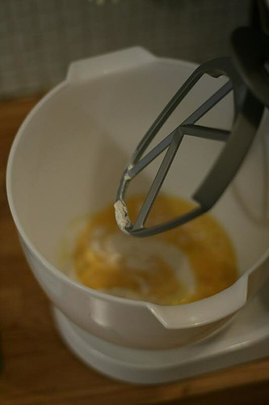
Hell eggene oppi en bolle med melet. OBS- Du kan faktisk bruke en foodprosessor, eller bare kna deigen på kjøkkenbenken.
Hvis du velger en food prosessor, hell ingrediensene oppi og kjør maskinen til du får mange deigkuler. disse samler du i en deig, og knar den på kjøkkenbenken til den blir ferdig.
Hvis du vil prøve den manuelle metoden: Hell melet på kjøkkenbenken, form en liten vulkan, og press ned toppen slik at det former seg et krater i melet. Hell eggeblandingen i krateret, og rør med en gaffel, inkorporer stadig mer og mer mel. Til slutt kan du bare begynne å kna guffen til det blir en deig. Voila. Fortsett i 5-10 minutter og deigen er ferdig.
Men jeg velger min trofaste kenwood kjøkkenmaskin.
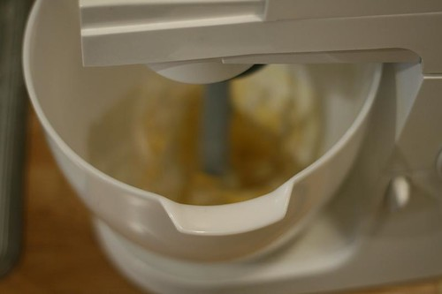
�?åå, jeg er så glad i maskinen min!
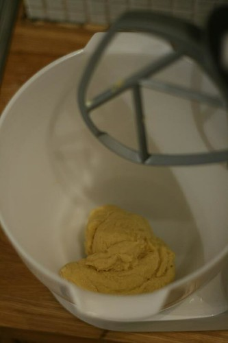
Etter en litenstund materialiserer det seg en søt liten deig (ikke sukkersøt, men søt i form av å være liten)
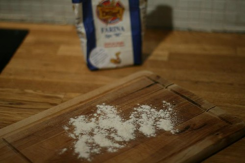
Strø litt mel på en fjøl, eller kjøkkenbenk.
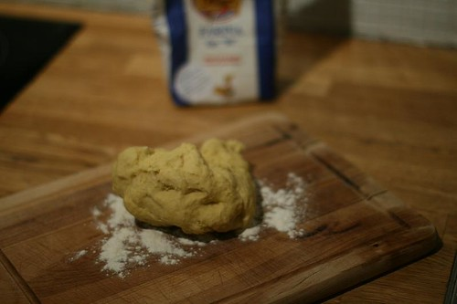
På med deigen…..
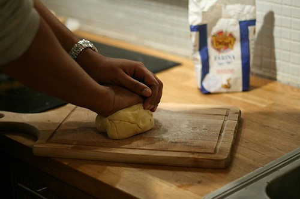
Kna, kna, kna— i 8-10 min. det har en utrolig antistressende effekt, og du blir godt kjent med deigen som du snart skal spise. Den er ferdigknadd når den blir lett og spenstig. Du kjenner det….
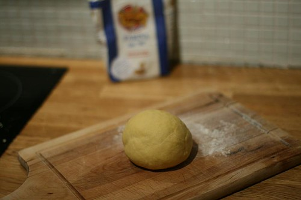
Form en kule av deigen.
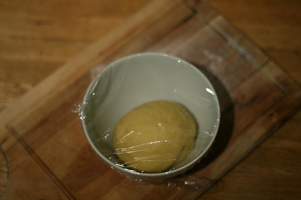
Plasser i en bolle, dekk til med plastfolie og la den hvile. Hvis du ikke skal lage ravioli, kan du bare hoppe ned til du ser deigen igjen. De neste bildene beskriver fremgangsmåten til raviolifyll.
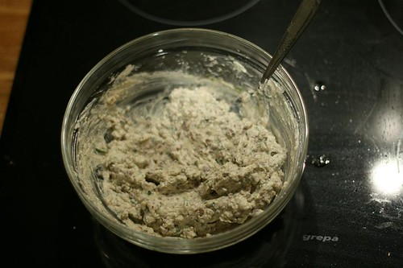
Raviolifyll! (kjøtt- og ricotta-fyll). (den er sinnsykt god!) (10 gjester på nyttårsaften var veldig imponert) (ville bare nevne det, altså) (dvs, du bør prøve denne)
Dette trenger du:
1 ss extra virgin olivenolje
2 hvitløksfedd (presset eller finkuttet, jeg foretrekker finkuttet )
200 gram karbonadedeig (eller annen kvalitets kjøttdeig). Ikke bruk vanlig kjøttdeig, det er så mye brusk og fett i det.
2,5 dl Ricotta-ost
**0,6 dl ferskrevet parmesanost
**
1 stor eggeplomme
0,6 dl finkuttet basilikumsblader
1/2 ts salt
pepper (en liten dert)
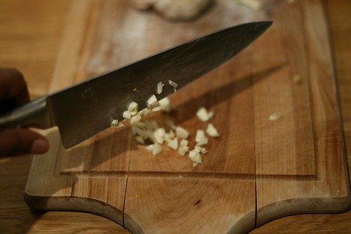
Finkutt hvitløken.
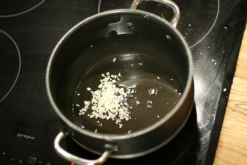
Hvitløken skal sammen med olivenoljen opp i en varm kjele. La den frese litt (1 min)
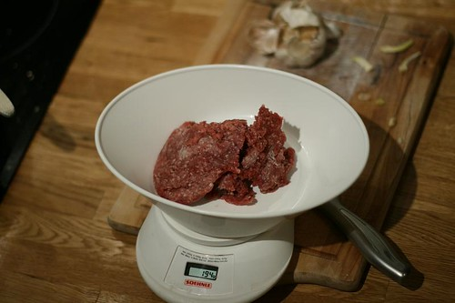
Gjør klar 200 g karbonadedeig.
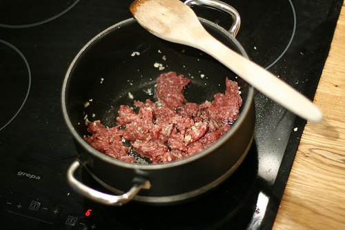
Stek kjøttet med hvitløken til det blir brunt. Om lag 3-4 minutter.
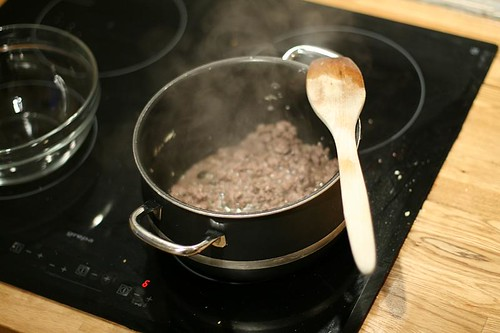
Slik skal det se ut.
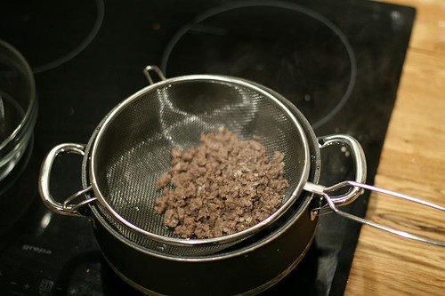
Hell ut kjøttet i en sil over vasken.
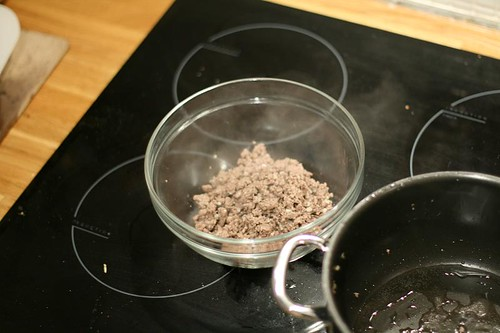
Plasser det i en bolle, og la det avkjøles litt der.
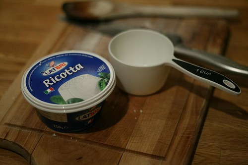
Finn frem den ferske ricottaen. Mål opp det du trenger.
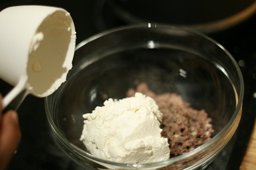
Og oppi bollen med kjøttet.
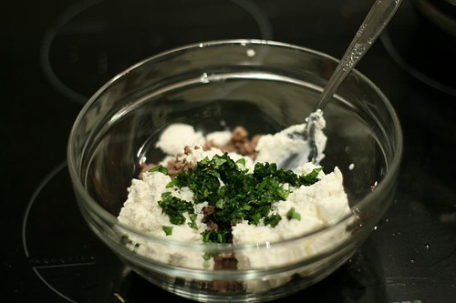
Det samme med basilikum..
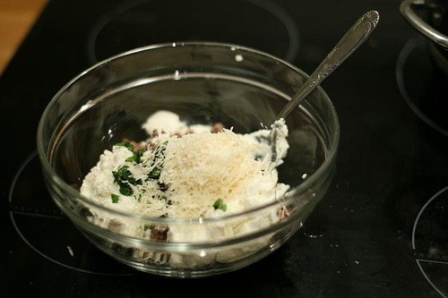
Ferskrevet parmesan….
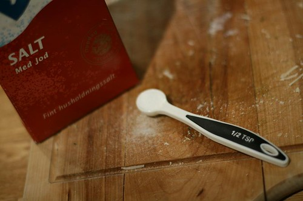
Salt….
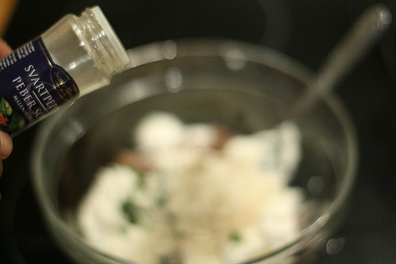
og pepper…..
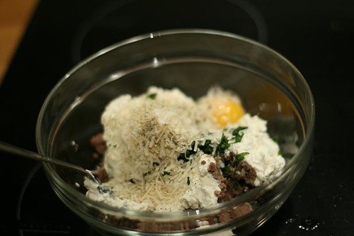
Og eggeplommen….
rør sammen og smak… Veldig godt. Man bare vet at raviolien kommer til å smake fantastisk godt.
Tilbake til pastadeigen! Velkommen tilbake til deg som hoppet over raviolioppskriften, og du som har fulgt med hele veien: Jeg ønsker deg en god tur videre…
Pastadeigen har forhåpentligvis hvilt en times tid.
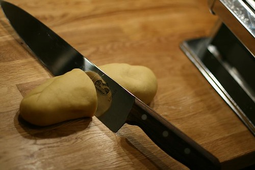
Del den i mindre biter…
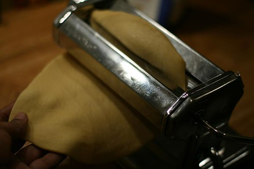
trykk den flat og kjør gjennom på største åpning i pastamaskinen… fortsett med et hakk mindre for hver gang…
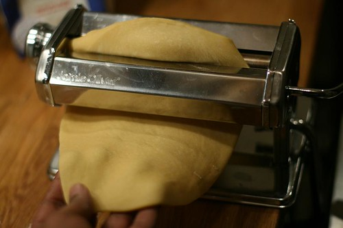
den blir stadig tynnere…
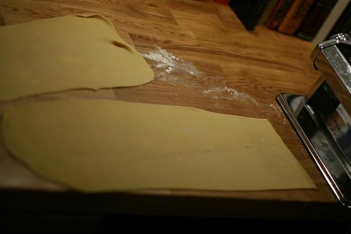
til slutt er den så flat som den kan forblitt…. Legg en pastaplate på en melet kjøkkenbenk. For dem som vil lage lasagna, er det bare å kutte dem til i passende plater. For dem som vil lage tagliatelle, er det bare å sette på tagliatellekutteren på pastamaskinen, så kutter den perfekte strimler.
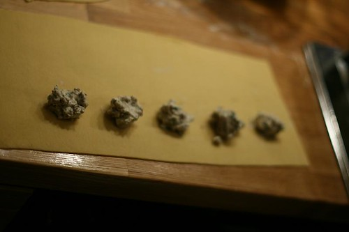
Finn frem en teskje, og legg ut små porsjoner av fyllet på pastaplaten. 1,5-2 cm mellom hver, og på den nederste langsiden av pastaplaten. Slik som på bildet.
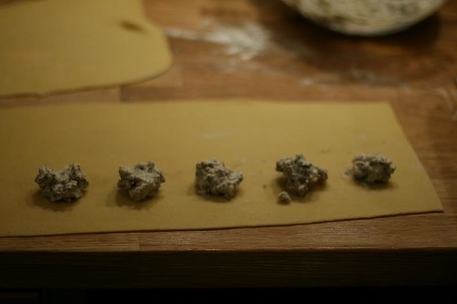
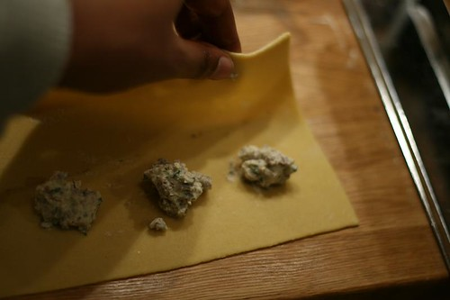
Ta tak i den øverste langsiden, og brett forsiktig platen over fyllet…
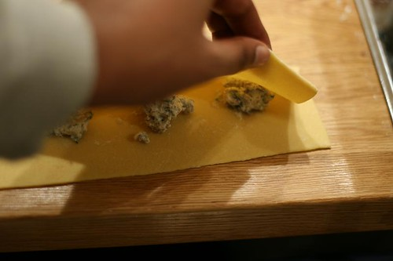
Vær forsiktig!
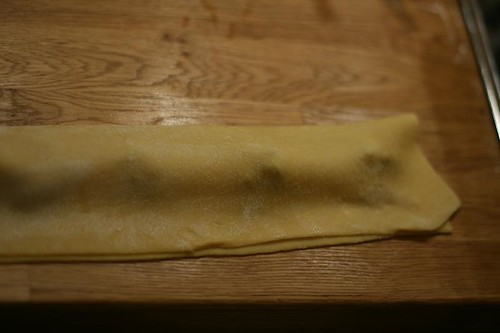
Ikke perfekt, men greit nok. Noen fukter med litt vann der skjøtene er for å få pastaen til å festes bedre. Jeg er ikke så dreven ennå.
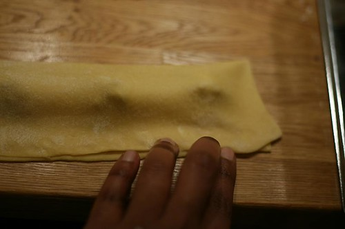
Press godt sammen på skjøtene, rundt hele…
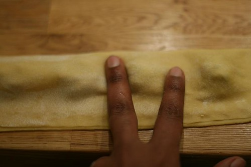
og press ned mellom fyllkulene…
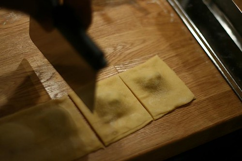
I mangel av en raviolikutter, bruker jeg en deigskrape…..
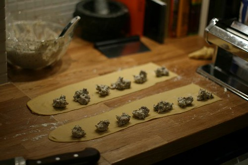
en ny runde—–
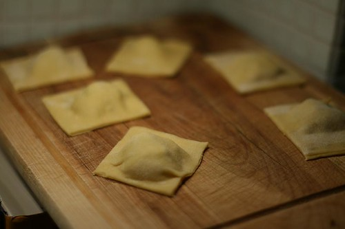
Plasser de ferdige ravioliene på en fjøl…strø gjerne litt mel under og på dem slik at de ikke fester seg i hverandre.
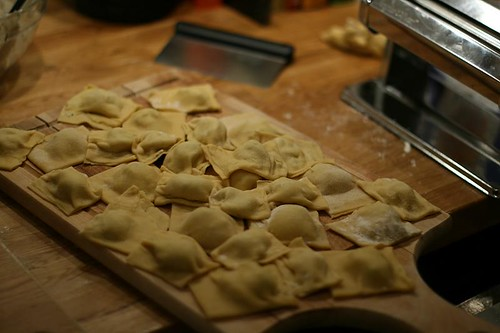
Hmm… her fyller det seg opp…
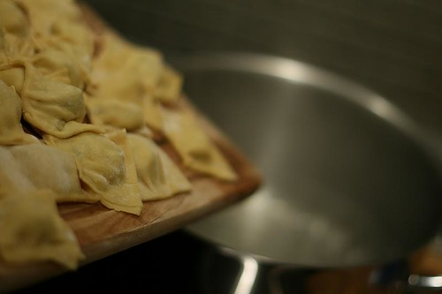
Ha en kjele kokende vann klar… putt oppi salt i det det begynner å koke… Og skyv raviolien oppi.
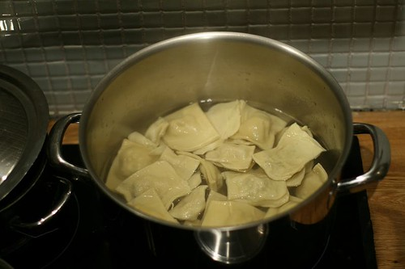
La det koke 3-5 minutter….Smak det frem til den riktige konsistensen.
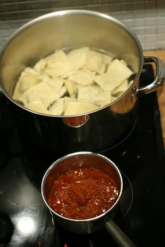
Varm opp en tomatsaus (denne er ferdiglagd–oppskrift kommer sener)
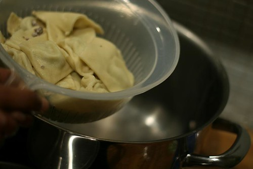
Drain the raviolis….Hell dem tilbake i kjelen med en spiseskje olivenolje, rør litt rundt, og de er klare til servering.
Her servert med tomatsaus, parmesanost og basilikumsblader— Hmmmm! Dette er så godt at man nesten får lyst til å lage en ny runde med en gang.
Lykke til—
Her er en kortversjon av oppskriften:
1. Varm oljen i en kaserolle, tilsett finhakket hvitløk, la det steke i 1 min.
2. Tilsett karbonadedeig, og stek til det brunes (3-4 min)
3. Hell ut fett fra karbonadedeigen, og plasser i en bolle. La den avkjøles litt.
4. Tilsett resten av ingredienseneog rør til du får raviolifyllet..
Takk til Cooks illustrated for oppskriften!
PS: Legg igjen epost-adressen din under, så sender jeg den en mail når jeg legger ut neste oppskrift.